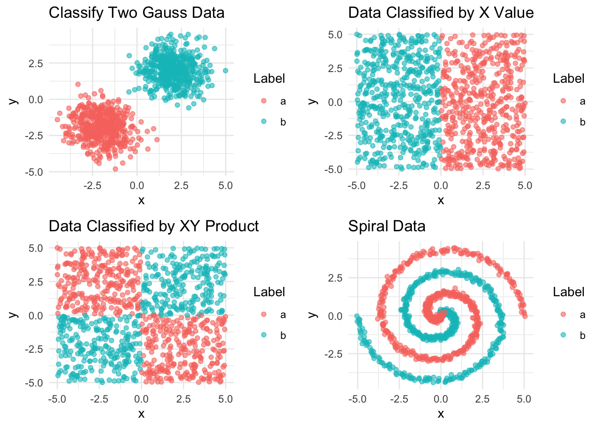

library(tidyverse)
library(neuralnet)
library(shiny)
library(ggplot2)
library(dplyr)
library(cowplot)
library(knitr)Project 2 Proposal: Clasifying generated data using Neural Networks in R
Introduction
Machine learning is fundamentally about exploiting patterns in data. Deep learning is a branch of machine learning which opts for huge expressive power, but loses almost all interpretability in the process. For this project we will be exploring neural networks, deep learning models which can (approximately) represent any function. Neural networks allow us to discover complex patterns in data that other models might not be able to predict.
We plan on illustrating the predictive power and flexibility of Neural Networks on data with complex relationships. We decided to focus on classification tasks, with applications in clustering and computer vision.
Research Question:
How accurately can a simple neural network classify points with their correct clusters?
What are the benefits of using a neural network over other algorithms?
What is a Neural Network?
A neural network machine learning algorithm modeled on the human brain and nervous system (hence NEURAL network). Neural networks contain a lattice of nodes, organized into layers, each of which can be thought of as its own linear regression model. Analogously, the ‘weights’ associated to a node can be viewed as slope coefficients and ‘biases’ can be viewed as the intercept terms. These weights and biases are assigned randomly at first, then iteratively changed to reduce the training error. Each additional node allows for a different linear relationships and adding more ‘layers’ of nodes allows for more flexible, non-linear relationships. Similar to decision trees, one can think of neural networks as ‘partitioning’ the predictor space into regions of certain classes (in the context of classification).

Data Generation
To illustrate the power and flexibility of neural networks, we created multiple datasets with increasingly complex relationships.
Each dataset contains two continuous predictor variables x and y, and one categorical response variable label with factors a and b.
The two continuous predictors allow us to visualize the relationship between these predictors easily, giving us an intuitive understand of what the underlying relationships might be. However, despite the intuitive nature of the relationships, more traditional models such as linear regression, logistic regression, and decision trees have trouble fitting to all of the data; even if one of these models can predict the relationship of a given dataset, their inflexibility prevents them from fitting well to all of the datasets.

This is where neural networks become extremely useful. Due to their previously mentioned flexibility, different neural networks with the exact same structure can be trained on vastly different datasets and still produce high predictive accuracy.
Displayed below are some functions we developed for plotting the paritioning of the predictor space based on our model predictions and the data.
#Code for plotting predictions
# Function for creating a 200 by 200 grid of 'tiles'
generate_grid <- function(data) {
x_range <- seq(min(data$x)-1, max(data$x)+1, length.out=200)
y_range <- seq(min(data$y)-1, max(data$y)+1, length.out=200)
grid <- expand.grid(x=x_range, y=y_range)
return(grid)
}
# Function for generating predictions for each 'tile'
predict_grid <- function(model, grid) {
grid$pred <- predict(model, grid)
grid$pred_label <- ifelse(grid$pred[,1] > grid$pred[,2], 'a', 'b')
return(grid)
}
# Function for plotting the data as well as the predictions
plot_prediction <- function(grid, data, title) {
ggplot() +
geom_tile(data=grid, aes(x=x, y=y, fill=pred_label), alpha=0.5) +
geom_point(data=data, aes(x=x, y=y, color=label), alpha=0.8) +
scale_fill_manual(values=c('a'='blue', 'b'='red')) +
scale_color_manual(values=c('a'='blue', 'b'='red')) +
labs(title=title, fill="Predicted Label", color="Actual Label") +
theme_minimal()
}Model 1: Gaussian Distributed Data Model
For our first model, we wish to predict the classes based on our Gaussian distributed data. As a reminder, our data looks like:
For this, we will use a neural network with two hidden layers, each containing 5 nodes. The final model will consist of weights and biases for each node. The code for the model is displayed below, along with the architecture of the model, labeled with the weights and biases.
set.seed(932)
model1 <- neuralnet(label~x+y, data=train1, hidden=c(5,5), linear.output=FALSE)
d1 <- plot(model1, rep="best")
d1NULLNow, we can look at the confusion matrix to determine the overall accuracy of the model, as well as its sensitivity and specificity.
prediction_label
a b
a 113 0
b 0 87This model produced a test accuracy of 100%! Display below, we have the predictor space with the plotted data, and the partitions created by the model to classify the points.
[1] 100Model 2: Classes Split by Y-Axis
For our second model, we wish to predict the classes based on ‘split’ data. This data looks like:
Again, we will use a neural network with two hidden layers, each containing 5 nodes. The code for the model is displayed below, along with the architecture of the model, labeled with the weights and biases. Notice that despite the architecture of the model being the same as the previous model, the associated weights and biases are different!
set.seed(932)
model2 <- neuralnet(label~x+y, data=train2, hidden=c(5,5), linear.output=FALSE)
plot(model2, rep="best")Now, we can look at the confusion matrix to determine the overall accuracy of the model, as well as its sensitivity and specificity.
prediction_label
a b
a 99 0
b 0 101This model also produced a test accuracy of 100%! Display below, we have the predictor space with the plotted data, and the partitions created by the model to classify the points.
[1] 100Model 3: Classes Split by Quadrants
For our third model, we wish to predict the classes based on data split into quadrants. This data looks like:
For the third model, we can also use a neural network with two hidden layers, each containing 5 nodes (remember, flexibility)! The code for the model is displayed below, along with the architecture of the model, labeled with the weights and biases. Again, despite the architecture of the model being the same as the previous two models, the associated weights and biases are different!
set.seed(932)
model3 <- neuralnet(label~x+y, data=train3, hidden=c(5,5), linear.output=FALSE)
plot(model3, rep="best")Now, we can look at the confusion matrix to determine the overall accuracy of the model, as well as its sensitivity and specificity.
prediction_label
a b
a 105 0
b 0 95This model also produced a test accuracy of 100%! Display below, we have the predictor space with the plotted data, and the partitions created by the model to classify the points.
[1] 100Model 4: Spiral Data
Finally, for our fourth model, we wish to predict the classes based on spiral, by far the most complex relationship of the bunch. This data looks like:
Here, to illustrate how imperative the architecture of the model is to its accuracy, we will fit three different models. The first model is a simple neural network with no hidden layers. This is esentially equivalent to running a linear regression model
set.seed(932)
model4_no_layers <- neuralnet(
label~x + y,
data=train4,
linear.output=FALSE,
learningrate=0.001,
stepmax=1e+06
)Unsurprisingly, after testing our model on the testing data, we can see that the model only produced a 58% test accuracy, only slightly more accurate than randomly guessing the classes of the points.
prediction_label
a b
a 56 41
b 43 60[1] 58Displayed below is a visualization of the predictions our model is making:
The second model has only one hidden layer with 5 nodes, a slightly more complex model than the previous one.
set.seed(932)
model4_5node_layer <- neuralnet(
label~x + y,
data=train4,
hidden=c(5),
linear.output=FALSE,
learningrate=0.001,
stepmax=1e+06
)After testing our model on the testing data, we can see that the model produced a 73% test accuracy, a large improvement from our previous model
prediction_label
a b
a 65 32
b 22 81[1] 73We can also see that the partitions of the predictor space are slightly more complex.
Finally, our third model is the most complex with two hidden layers each containing 8 nodes.
set.seed(932)
model4 <- neuralnet(
label~x + y,
data=train4,
hidden=c(8,8),
linear.output=FALSE,
learningrate=0.001,
stepmax=1e+06
)After testing this model on the testing data, we can see that the model produced a 98% test accuracy, significantly better than either of our previous models!
prediction_label
a b
a 96 1
b 3 100[1] 98The complexity of our model as well as the high predictive accuracy are reflected in the partitions of the predictor space.
Discussion and Conclusion
As we showed, our neural networks were able to find the patterns in our data set relatively easily. The first three (Gauss, X, XY) data sets use pretty simple neural networks that didn’t take too long to train and were extremely accurate, getting accuracy all greater than 99%. The Spiral data set was much more complex, and needed a more complex neural network which required more time, but it was able to accurately (98%, with it actually being close to impossible to get 100% as some data points with different labels overlapped) label the data. We were able to show case these with our default values in our presentation and shiny app, with users able to use the shinny app to explore their own neural network architectures in order to see the impact on each data set. The caveat is that the spiral data set would often crash R if messed around with too much but the shinny app worked well with the other data sets. In conclusion we are very happy with our project and believe we adiquetly illustrated the power of neural networks
This was a pretty basic showcase of the power of Neural networks, but there’s so much that could be built off of what we’ve done. While working on this we discussed that what we were doing was not too far off of banknote security. As an extension, one could take a fraudulent bank note data set and see how well different network architectures would do on a bank note data set, or even more complex cyber security problems.
Finally, displayed below is the code for a Shiny App that allows users to train their own neural networks on the four datasets we created.
ui <- fluidPage(
titlePanel("Neural Networks Visualization"),
sidebarLayout(
sidebarPanel(
selectInput("dataset", "Choose a dataset:", choices = c("Gaussian distribution" = "data_two",
"Horizontal split" = "data_by_x",
"Quadrants" = "data_by_xy",
"Spiral data" = "spiral_data")),
selectInput("learningRate", "Choose Learning rate", choices = c("default",
"0.3",
"0.01",
"0.003",
"0.001",
"0.0003",
"0.0001")),
selectInput("HiddenLayers", "Choose Number of nodes in 2 layers:", choices = c("default",
"3",
"4",
"5",
"6",
"7",
"8",
"9")),
actionButton("runModel", "Run Model")
),
mainPanel(
plotOutput("scatterPlot")
)
)
)
server <- function(input, output) {
plotData <- reactive({
#basic pulls with default from above
if (input$HiddenLayers == "default" && input$learningRate == "default") {
# Choose which pre-generated plot to display based on the dataset
if (input$dataset == "data_two") {
p1
} else if (input$dataset == "data_by_x") {
p2
} else if (input$dataset == "data_by_xy") {
p3
} else { # "spiral_data"
p4
}
} else {
# Convert numeric if not 'default'
hidden_layers <- ifelse(input$HiddenLayers != "default", rep(as.numeric(input$HiddenLayers), as.numeric(input$HiddenLayers)), c(5,5))
learning_rate <- ifelse(input$learningRate != "default", as.numeric(input$learningRate), 0.01)
# Dynamic model function
run_model <- function(data,
hidden=hidden_layers,
rate=learning_rate) {
neuralnet(label~x+y,
data=data,
hidden=hidden,
learningrate=rate,
linear.output=FALSE,
stepmax=1e+06)
}
data_list <- list(data_two = train1, data_by_x = train2, data_by_xy = train3, spiral_data = train4)
model <- run_model(data_list[[input$dataset]])
grid <- generate_grid(data_list[[input$dataset]])
grid$pred_label <- predict_grid(model, grid)$pred_label
plot_prediction(grid, data_list[[input$dataset]], paste("Model Predictions with LR =", learning_rate, ", Hidden Layers =", toString(hidden_layers)))
}
})
# Only update the output plot when the button is clicked, doesnt really work
observeEvent(input$runModel, {
output$scatterPlot <- renderPlot({
plotData()
})
}, ignoreInit = TRUE)
}
shinyApp(ui = ui, server = server)